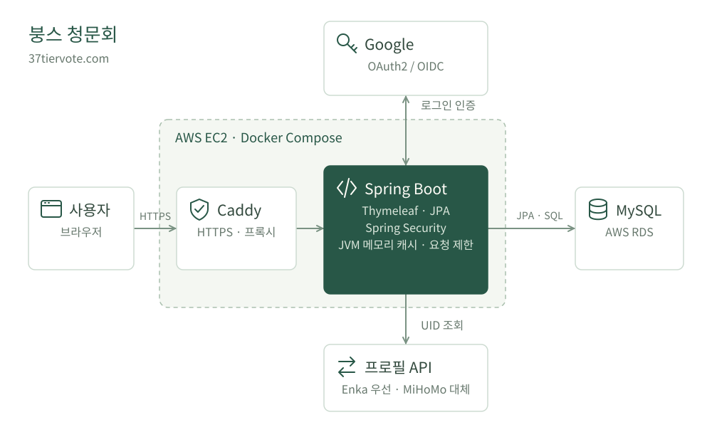

소개
안녕하세요. 신입 백엔드 개발자 유성민입니다.
Java와 Spring Boot로 스타레일 커뮤니티를 개발·운영하고 있습니다.
데이터 분석 인턴과 뉴스 감성 분석 프로젝트를 경험했습니다.
학력 · 경험
DGIST 졸업
- –
애드 · 개발 인턴
Python·pandas로 광고 로그를 전처리하고 분석 결과를 시각화했습니다.
- –
뉴스 감성 분석 프로젝트 · 팀 대표
뉴스 데이터를 수집·분석하고 주가 지표와 비교했습니다.
기술
- 백엔드
- Java · Spring Boot · Spring Security · JPA
- 데이터
- MySQL · Flyway · Python · pandas
- 배포 · 운영
- AWS EC2 / RDS · Docker · Caddy · GitHub Actions
- 테스트
- JUnit · Testcontainers · 부하 테스트
프로젝트
개인 프로젝트 · 대표작
스타레일 커뮤니티
붕스 청문회
캐릭터를 평가하고 투표와 댓글로 의견을 나누는 웹 서비스입니다. 기획, 백엔드 개발, AWS 배포와 운영을 직접 진행했습니다.
Java 21 · Spring Boot · JPA · MySQL · Docker · AWS
공개 후 약 2시간 동안 47명 가입, 130건 투표
서비스 아키텍처
EC2에서 웹 애플리케이션을 실행하고, RDS에 데이터를 저장합니다.

아키텍처 설명
- 웹 요청 처리
- Caddy가 HTTPS 요청을 Spring Boot로 전달합니다. 화면은 Thymeleaf로 렌더링합니다.
- 데이터와 로그인
- 회원·투표·댓글은 RDS MySQL에 저장하고, Google OAuth2로 로그인합니다.
- 외부 프로필 조회
- Enka를 먼저 호출하고 실패하면 MiHoMo로 전환합니다. 캐시와 요청 제한은 단일 JVM 메모리에서 관리합니다.
개발 검증 GitHub Actions에서 테스트, Compose·Caddy 설정 검사, 컨테이너 기동 확인을 수행합니다.
운영하며 해결한 문제
- 동일 계정의 중복 조회는 진행 중인 요청 공유와 TTL 캐시로 줄였습니다.
- 외부 API의 지연·실패에 대비해 타임아웃, 호출 차단, 대체 공급자 전환을 적용했습니다.
- Java와 MySQL의 시간 정밀도를 맞춰 조회 실패 후 쿨다운이 남는 오류를 수정했습니다.
공개 전 3,000건 이상의 요청으로 부하 테스트를 진행했습니다.
개발 기록 보기 ↗
팀 프로젝트 · 데이터 분석
뉴스 감성 분석
News Fear & Greed Index
2023.02 – 2023.12
뉴스의 긍정·부정 표현을 분석해 주가 지표와 비교한 프로젝트입니다. 팀 대표로 참여해 뉴스 수집과 전처리, 감성 분석을 진행했습니다.
Python · BeautifulSoup · KoNLPy · Keras
경쟁사에 대한 부정적인 문장이 분석 대상 기업의 평가에 섞이는 문제를 확인하고, 대상 기업을 중심으로 문맥을 구분하도록 전처리 기준을 보완했습니다.
프로그래머스와 백준 문제를 풀며 자료구조와 알고리즘을 학습하고, 풀이를 GitHub에 기록하고 있습니다.
Python · Java
자격증 · 어학
- 정보처리기사취득
- 정보통신기사취득
- SQLD취득
- ADsP취득
- PCCP PythonLv.2
- TOEIC865
- TOEIC SpeakingIM3
- 한국사1급
- TESAT2급